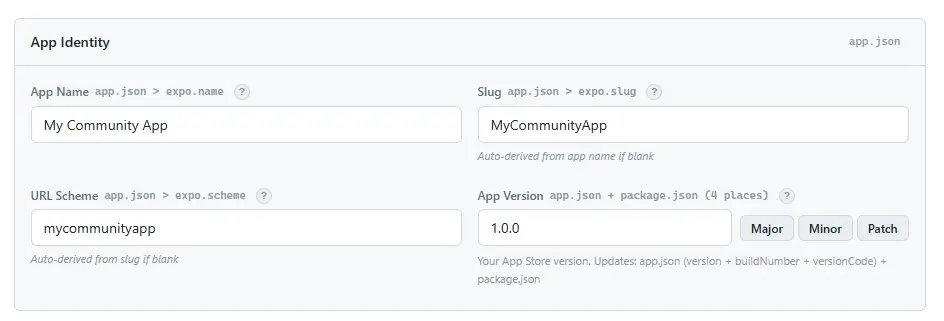
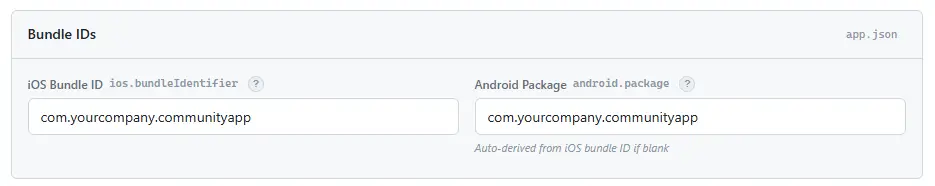
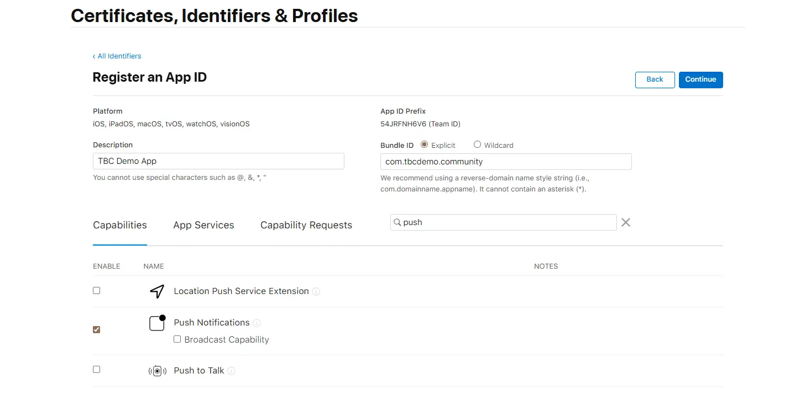
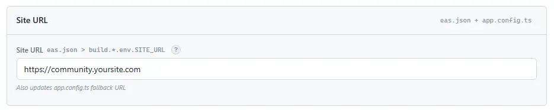
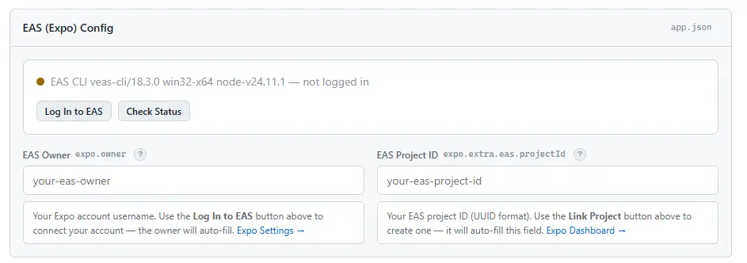
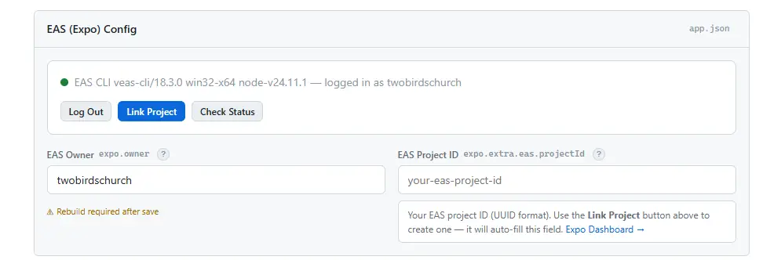
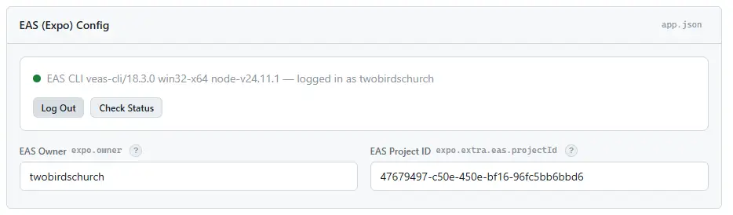

Community App Setup
Your white-label community app is ready to go. Let's get it branded, configured, and live.
Follow the steps below — you'll have a running app in minutes
1. Prerequisites
Make sure you have these accounts and tools ready before starting setup.
Required Accounts & Services
| Service | What It's For | Cost |
|---|
| Fluent Community |
WordPress community plugin — powers the feed, spaces, profiles, and all backend content. Must be installed on your WordPress site. |
Free tier available (Pro for messaging, courses) |
| Expo Account |
Cloud build service (EAS) for compiling iOS and Android binaries. Also handles push notification tokens. |
Free tier (30 builds/month) |
| Apple Developer Account |
Required to submit to the iOS App Store and sign builds. |
$99/year |
| Google Play Console |
Required to submit to the Google Play Store. |
$25 one-time |
Optional Services
These are only needed if you use the features they power. The app works fine without them.
| Service | What It Powers | When You Can Skip It | Cost |
|---|
| Firebase |
Push notifications — alerts users about new posts, replies, chat messages, etc. |
Set FEATURES.PUSH_NOTIFICATIONS = false in constants/config.ts if you don't need push. |
Free (Spark plan) |
| Pusher Channels |
Real-time updates — live message delivery, typing indicators, instant feed updates. |
Only needed if using Pusher Cloud as your socket provider. Skip if using Fluent Socket (built-in) or custom Soketi, or if you don't use chat/messaging. Socket config is read from the server automatically. |
Free tier (200k msgs/day) |
| Twilio |
OTP phone verification during user registration — sends a code to the user's phone number to verify it. Configured in the tbc-fluent-profiles plugin settings in WordPress admin. |
Skip if you don't need phone verification on signup. Registration works without it — the phone number field simply won't appear. |
Pay-as-you-go |
Development Tools
| Tool | Version | Install / Check |
|---|
| Node.js | 18+ (LTS recommended) | node -v |
| npm | Comes with Node.js | npm -v |
| EAS CLI | Latest | npm install -g eas-cli |
| Git | Any recent version | git --version |
| VS Code | Latest | Recommended editor — our dashboard and docs are built around it |
| Claude Code for VS Code | Latest | AI assistant that understands your project. Free tier is plenty for setup & configuration |
No Xcode or Android Studio needed. EAS builds happen in the cloud. You only need local IDEs if you want to run builds on the iOS Simulator or do native debugging.
Claude Code is free to get started. All the code is already written — you don't need an expensive AI plan. A
free Claude account is plenty to answer questions about the app, help with setup, and guide you through customizations. We include a
CLAUDE.md file that teaches Claude your entire project, so it can help right out of the box.
2. Setup Walkthrough
This is the main event. Follow these steps in order and you'll have a branded, running app on your device. The setup dashboard handles most of the heavy lifting — it reads your config files, lets you edit everything in a browser UI, and validates your setup live.
After purchasing, you'll receive a
.tar.gz archive (e.g.
core-update-3.1.0.tar.gz).
Extract it to a folder on your computer and
name it after your community — something like
MyCommunityApp or
FitnessTribeApp. This is your project root. Inside you'll see everything you need: app code, companion plugins, setup dashboard, and docs.

Open in VS Code
Open VS Code, click File → Open Folder, and navigate to the folder you just extracted. This gives you a full project workspace with the terminal built in.

Claude Code — your AI co-pilot
We ship a CLAUDE.md file with your project. This tells Claude Code everything about your app — how the module system works, where the docs live, what files are safe to edit, and what's core. Install the Claude Code extension for VS Code and you get an AI assistant that actually understands your project.
Ask it to launch your dashboard, configure settings, build custom modules, debug issues, or explain how any part of the app works. It has access to our full documentation and knows the entire project structure. All the code is already written — a free Claude account is plenty to help answer questions about the app, walk you through setup, and guide you through customizations.

Make it yours. The CLAUDE.md file includes a Your Instructions section at the bottom where you can add your own preferences, project notes, and rules. This file is protected during core updates — your customizations won't be overwritten.
If you're using Claude Code, just ask it to "launch the dashboard" — it knows what to do. Otherwise, open a terminal in your project folder and run:
npm run dashboard
You'll see output like this:
========================================
Setup Dashboard
========================================
Project: C:\Users\YourName\Projects\MyCommunityApp
Dashboard: http://localhost:3456
Press Ctrl+C to stop.
The dashboard automatically opens http://localhost:3456 in your browser. This is your setup command center — it reads your actual config files, lets you edit everything in a browser UI, and validates your setup live. You'll work through each tab from left to right.

Keep the dashboard running while you work through setup. When you're done, click the
stop button 
in the dashboard header, or press
Ctrl+C in the terminal.
If the dashboard detects that
node_modules is missing, it will show a yellow banner at the top with an
Install Dependencies button. Click it — this runs
npm install for you. Once complete, the banner disappears and you're ready to configure.

Config Tab
The Config tab is the big one — this is where you make the app yours. Work through each card from top to bottom. When you're done, hit Save Changes at the bottom and everything gets written to the right files automatically.
Set your App Name (what users see on their home screen), and the dashboard auto-derives the Slug (URL-safe project ID) and Scheme (deep link prefix like myapp://) from it. You can override these if needed, but the auto-derived values are usually fine.
Version starts at 1.0.0 — this is your app version that you control. Use the bump buttons (Major, Minor, Patch) or type directly. The dashboard writes it to all 4 required places at once (app.json version + buildNumber + versionCode + package.json). There's also a quick version bump section on the Builds tab for convenience. The core version is separate and locked — it tracks which version of the product you're running and is used by the Updates tab to check for new releases.

Your iOS Bundle ID and Android Package uniquely identify your app in the App Store and Play Store. These cannot be changed after your first store submission, so choose carefully.
iOS Bundle ID
Format: com.yourcompany.communityapp — reverse domain style. You'll need to register this in the Apple Developer Portal → Identifiers:
- Click the + button to register a new App ID
- Select App IDs, then App
- Enter a description and your Bundle ID (explicit, not wildcard)
- Enable Push Notifications under Capabilities (required for the app to send notifications)
- Click Continue → Register
Enter this same bundle ID in the dashboard. It must match exactly — if it doesn't, builds will fail and push notifications won't work.


Android Package
Let this auto-fill from your iOS Bundle ID — no need to type anything here. Using the same identifier on both platforms is recommended because Firebase (used for push notifications) requires the package name to match exactly. Keeping them the same means one Firebase project covers both iOS and Android cleanly. If you do need a different Android package name, type it in manually — just make sure your Firebase project has separate apps configured for each.
You'll create your app in the Google Play Console later when you're ready to submit. The package name is set during your first upload — just make sure it matches what you entered here.
Your WordPress + Fluent Community site URL (no trailing slash). This is the server your app talks to for everything — login, feed, profiles, messaging. It must have the tbc-community-app companion plugin installed.

EAS is the cloud build service that compiles your app for iOS and Android — no Xcode or Android Studio needed on your machine. The dashboard handles the entire setup.
Sign up or log in
If you don't have an Expo account yet, create one for free — it only takes a minute.
Then find the EAS (Expo) Config card and click Log In to EAS.
This opens your browser where you sign in. Once complete, the dashboard automatically detects the login and updates.

Good to know: EAS login is per machine, not per project. Once you log in, every project on this computer uses that Expo account. If you work with multiple Expo accounts, use the Log Out button to switch, or manually type a different owner name in the field.
Link your project
After logging in, click Link Project.
This creates a new project on your Expo account using your app's slug as the project name, and fills in the EAS Owner and EAS Project ID automatically.

If a project with the same slug already exists on your account, it links to that one instead of creating a duplicate. The slug comes from your app name — so set your app name first (step 4) before linking.
You're linked!
Once linked, both fields fill in and the Link Project button disappears. EAS is configured — on to the next step.

These fields control how your app identifies itself in code. App Name (Config) is what appears in headers, notifications, and other in-app text. User Agent identifies your app in HTTP requests to your WordPress site.
Both auto-fill from your App Name in step 4 — just verify they look right. You can edit them if you want the code-level name to differ from the store name (e.g. a shorter name for headers).
Toggle core features on or off. Disabled features are completely hidden from users. This is where you choose which parts of the app to enable — feed, spaces, profiles, messaging, courses, blog, YouTube, cart, and more. Changes are included when you click Save Changes.
Control which tabs appear on user profile screens — posts, comments, reactions, courses, badges, etc. Toggle each one independently.
Your Apple ID (email) and ASC App ID (numeric, from App Store Connect → General → App Information → Apple ID). These are needed for automated iOS submissions via EAS Submit.
Choose your submission track (internal for testing, production for release) and upload your Google Play Service Account Key (JSON). This enables automated Android submissions via EAS Submit.
The npm package name in package.json. Not user-visible — just for repo cleanliness. Auto-derived from your slug.
When you're done with all the Config tab fields, click Save Changes. The dashboard writes everything to the correct config files (app.json, eas.json, app.config.ts, constants/config.ts, package.json) in one go.
Assets Tab
Replace app icons, splash screen, and login branding with your own images. Details coming as we walk through this step.
Plugins & Firebase Tab
Check companion plugin status and drop in your Firebase config files. Details coming as we walk through this step.
Modules Tab
Toggle add-on features on or off with a single click. Details coming as we walk through this step.
Builds Tab
Build for iOS and Android right from the dashboard. Details coming as we walk through this step.
Updates Tab
Activate your license and apply future updates with automatic backup. Details coming as we walk through this step.
Status Tab
Live validation — shows pass/fail for every check. Green across the board means you're ready to build and ship.
Requirement: Your app needs a WordPress site with
Fluent Community installed, plus the
tbc-community-app companion plugin. See the
Companion Plugins section for install instructions.
Prefer manual editing? Click here for the file-by-file checklist
If you'd rather edit config files directly instead of using the dashboard, here's the quick version. See Configuration Reference for details on each file.
- Install dependencies:
npm install
- Set up EAS CLI:
npm install -g eas-cli && eas login && eas init
- Set your site URL in
eas.json — replace the SITE_URL value in all build profiles
- Set your app name & branding in
constants/config.ts — update APP_NAME and APP_USER_AGENT
- Update
app.json — app name, slug, scheme, bundle IDs, EAS project ID, owner, permission strings
- Update
app.config.ts — edit the YOUR CONFIG section: fallback URL, name, slug
- Replace branding images in
assets/images/
- Replace Firebase configs —
google-services.json (Android) and GoogleService-Info.plist (iOS)
- Install companion plugins on your WordPress site (see Companion Plugins)
- Configure modules in
modules/_registry.ts
- Run the dashboard to catch anything you missed:
npm run dashboard — check the Status tab
- Create a dev build:
eas build --profile development --platform all
3. Configuration Reference
Every file you need to edit, organized by purpose.
constants/config.ts Required
Buyer-editable values are in the YOUR CONFIG section at the top of the file (above the END YOUR CONFIG marker). Everything below that line is core — don't edit it.
| Value | What It Does | Example |
|---|
APP_NAME | Display name used in UI where server branding isn't available | 'My Community' |
APP_USER_AGENT | User-Agent header sent with API requests | 'MyCommunityApp/1.0' |
SITE_URL | Derived from eas.json (no fallback — build fails if missing) | 'https://community.example.com' |
FEATURES.DARK_MODE | Dark mode synced from Fluent Community theme | true |
FEATURES.PUSH_NOTIFICATIONS | Push notifications via TBC-CA plugin | true |
FEATURES.MESSAGING | Fluent Messaging (direct chat) | true |
FEATURES.COURSES | Fluent LMS courses | true |
FEATURES.CART | WooCommerce cart icon in header | true |
FEATURES.MULTI_REACTIONS | Multi-reaction support (requires TBC Multi-Reactions plugin). When off, uses single like button. | true |
FEATURES.PROFILE_TABS.* | Which tabs appear on user profiles (POSTS, SPACES, COMMENTS) | false |
app.json Required
Do not miss these. Several values in app.json are easy to overlook but will cause builds to fail or ship with wrong branding.
| Path | What It Does | Notes |
|---|
expo.name | App display name | Shows in app stores and device home screen |
expo.slug | Expo project slug | Must be unique across Expo |
expo.version | App version string | Shown in app stores |
expo.scheme | Custom URL scheme for deep links | e.g. "mycommunity" → mycommunity:// |
expo.owner | Your Expo account name | Builds fail if this doesn't match your EAS account |
expo.extra.eas.projectId | Your EAS project ID | Get from eas init or Expo dashboard. Push notifications break without this. |
ios.bundleIdentifier | iOS bundle ID | e.g. "com.yourcompany.community" |
ios.buildNumber | iOS build number (string) | Matches version, e.g. "1.0.0" |
android.package | Android package name | e.g. "com.yourcompany.community" |
android.versionCode | Android version code (integer) | Pattern: major*100 + minor*10 + patch |
android.adaptiveIcon.backgroundColor | Background color for Android adaptive icon | Match your brand primary color |
plugins > expo-notifications > color | Android notification accent color | Match your brand primary color |
plugins > expo-splash-screen > backgroundColor | Splash screen background (light + dark) | Light: typically white. Dark: typically near-black. |
plugins > expo-image-picker > cameraPermission | iOS camera permission dialog text | Replace app name in the string |
plugins > expo-image-picker > photosPermission | iOS photo library permission dialog text | Replace app name in the string |
plugins > expo-media-library > photosPermission | iOS media save permission dialog text | Replace app name in the string |
plugins > expo-media-library > savePhotosPermission | iOS media save permission dialog text | Replace app name in the string |
app.config.ts Required
Reads SITE_URL from the environment (set in eas.json) and wires up deep links automatically. Has its own YOUR CONFIG section with three things to edit:
| Value | What to Change |
|---|
siteUrl fallback | Replace with your site URL (only used for local dev — EAS builds use eas.json) |
name / slug fallbacks | Replace with your app name and slug |
moduleDeepLinkPaths | Add/remove path prefixes for any add-on modules that need deep linking (e.g. '/blog/') |
eas.json Required
Critical: SITE_URL must be set in every build profile. The app will not build without it.
{
"build": {
"development": { "env": { "SITE_URL": "https://your-site.com" } },
"preview": { "env": { "SITE_URL": "https://your-site.com" } },
"simulator": { "env": { "SITE_URL": "https://your-site.com" } },
"production": { "env": { "SITE_URL": "https://your-site.com" } }
},
"submit": {
"production": {
"ios": {
"appleId": "your-apple-id@example.com",
"ascAppId": "YOUR_ASC_APP_ID"
}
}
}
}
The submit.production.ios section saves you from being prompted for Apple credentials on every eas submit. Find your ascAppId in App Store Connect → your app → General → App Information → "Apple ID". For fully automated submissions, set the EXPO_APPLE_PASSWORD environment variable to an App-Specific Password.
package.json Optional
Update the "name" field (line 2) to your project name. Not user-visible but keeps your repo clean.
Firebase Configuration Required for Push Notifications
Push notifications require a Firebase project linked to your app. Follow these steps:
- Create a Firebase project at console.firebase.google.com
- Add an Android app in Firebase:
- Set the package name to exactly match
android.package in your app.json (e.g. com.yourcompany.community)
- Download
google-services.json → place in the project root (replaces the existing file)
- Add an iOS app in Firebase:
- Set the bundle ID to exactly match
ios.bundleIdentifier in your app.json
- Download
GoogleService-Info.plist → place in the project root (replaces the existing file)
- Upload your APNs key (required for iOS push):
- In Apple Developer → Keys, create a key with APNs enabled
- Download the
.p8 key file and note the Key ID
- In Firebase Console → Project Settings → Cloud Messaging → iOS, upload the
.p8 file with your Key ID and Team ID
Package names must match exactly. If the package name in Firebase doesn't match app.json, push notifications will silently fail — no error, just no notifications delivered.
constants/colors.ts Optional
Default fallback colors used before the server theme syncs. The app automatically pulls your Fluent Community theme colors — these are just the initial defaults on first launch.
Real-Time Messaging Setup Optional — Requires Fluent Messaging
Only needed if you use Fluent Community Pro with the Fluent Messaging add-on and want real-time message delivery.
Socket configuration is server-driven. The app reads socket settings from your WordPress site automatically — no app-side Pusher configuration needed.
- In your WordPress admin, go to Fluent Community → Settings → Messaging
- Enable real-time and choose your socket provider:
- Pusher Cloud — create an app at pusher.com, enter credentials
- Fluent Socket — Fluent's hosted service, auto-configured
- Custom Soketi — enter your self-hosted Soketi host and port
- That's it — the
tbc-community-app plugin serves the socket config to the app via /app-config
No app-side credentials needed. The app reads socket config from the server at startup and caches it. Switching providers in WordPress admin takes effect on the next app launch — no rebuild required. The fallback PUSHER_CONFIG in constants/config.ts is only used on first-ever launch before server config arrives.
4. Branding Assets
Replace these files in assets/images/:
| File | Purpose | Notes |
|---|
app_icon_ios.png | iOS app icon | 1024x1024, no transparency |
app_icon_android_adaptive_fg.png | Android adaptive icon foreground | Must work with adaptiveIcon.backgroundColor in app.json. Also used as Play Store listing icon. |
app_icon_android_adaptive_bg.png | Android adaptive icon background | Optional — use solid color in app.json instead |
app_icon_android_notification.png | Android notification icon | Monochrome, transparent background |
splash_screen_img.png | Splash screen logo | Centered on splash backgroundColor |
login_background_img.png | Login screen background | Full-screen background image |
login_logo.png | Login screen logo (fallback) | Overridden by server-synced logo if available |
Server-synced branding: The login logo is automatically pulled from your Fluent Community site at login.
The static login_logo.png is a fallback for first launch before server branding is cached.
5. Companion Plugins
WordPress plugins that power the app's backend. Located in the companion plugins/ folder.
Installing Plugins
- In the
companion plugins/ folder, find the plugin folder you need
- Zip the folder (e.g. create
tbc-community-app.zip)
- In WordPress admin: Plugins → Add New → Upload Plugin → select the
.zip → Install Now → Activate
- Repeat for each plugin
Install order matters. Install tbc-community-app first — other plugins depend on it.
Recommended order: tbc-community-app → tbc-fluent-profiles → tbc-multi-reactions → any add-on plugins.
Required Plugins Must Install
These ship with the product and are required for the app to function.
| Plugin | Purpose | WordPress Dependencies |
|---|
tbc-community-app |
Main bridge plugin. All custom REST endpoints (auth, push notifications, config, branding, theme sync, etc.) |
Fluent Community (free or Pro) |
tbc-fluent-profiles |
Custom profile fields, multi-step registration, OTP phone verification (optional, requires Twilio — configured in plugin settings) |
Fluent Community |
tbc-multi-reactions |
Multi-reaction system — emoji reactions on posts and comments |
Fluent Community |
Add-on Plugins Sold Separately
These modules and their companion plugins are purchased separately and are not included in the base product. Install only if you have purchased the add-on.
| Plugin | Module | WordPress Dependencies | Purpose |
|---|
tbc-book-club |
bookclubModule |
None |
Audiobook player with chapters, progress tracking, bookmarks, and meeting schedules. Includes persistent mini-player above the tab bar. |
tbc-youtube |
youtubeModule |
None (YouTube Data API v3 key required) |
YouTube channel integration with server-side caching. Shows latest videos on the home screen. |
Optional Theme Optional
| Theme | Purpose | Notes |
|---|
tbc-starter-theme |
A minimal WordPress starter theme designed to work with Fluent Community |
Optional — use your own theme if you prefer. Install via WordPress admin: Appearance → Themes → Add New → Upload Theme. |
Core WordPress Requirements
Features that depend on WordPress plugins or third-party services:
| Feature | Requires |
|---|
| Community (feed, spaces, profiles) | Fluent Community (free) |
| Direct messaging | Fluent Community Pro + Fluent Messaging add-on |
| Courses | Fluent Community Pro + LMS add-on |
| Cart / E-commerce | WooCommerce |
| Blog | WordPress posts (built-in, uses standard WP REST API) |
| Push notifications | Firebase project + tbc-community-app (see Firebase Setup) |
| Real-time updates | Fluent Messaging add-on — supports Pusher Cloud, Fluent Socket, or custom Soketi (configured in WordPress admin, app reads config automatically) |
| OTP verification | Twilio account — configured in tbc-fluent-profiles plugin settings. Optional. |
6. Module System
Modules are self-contained features that plug into the app without touching core code.
Enable or disable them by editing modules/_registry.ts.
Enabling/Disabling Modules
// modules/_registry.ts
// Active — uncomment to enable:
import { blogModule } from './blog/module';
// Disabled — comment out to disable:
// import { blogModule } from './blog/module';
export const MODULES: ModuleManifest[] = [
blogModule, // Remove this line too when disabling
];
Important: If a module has a tab, it also has a route stub file in app/(tabs)/.
The route stub can stay — it's harmless when the module is disabled. But if you want a clean build, remove it too.
Available Modules
| Module | Registers | Description | Requirements | Ships With |
|---|
blogModule |
Home widget, menu item |
WordPress blog posts and comments. Uses the standard WP REST API — no companion plugin needed. |
Published WordPress blog posts |
Base |
bookclubModule |
Home widget, menu item, tab bar mini-player, context provider |
Audiobook player with chapter navigation, progress tracking, bookmarks, and meeting schedules. Includes a persistent mini-player above the tab bar. |
tbc-book-club plugin |
Add-on |
youtubeModule |
Home widget |
Shows latest videos from a YouTube channel with server-side caching. Accessed via a "See All" link on the home screen widget. |
tbc-youtube plugin, YouTube Data API v3 key |
Add-on |
What Modules Can Register
- Bottom tabs — full-screen tab in the tab bar
- Home widgets — cards on the home screen
- Menu items — entries in the avatar dropdown menu
- Header icons — icon buttons in the top navigation bar
- Context providers — app-level state (e.g., audio player)
- Tab bar addons — persistent UI above the tab bar (e.g., mini player)
Building Your Own Modules
The module system is designed for extensibility. To create your own module:
- Create a folder in
modules/yourmodule/
- Define a manifest in
module.ts that exports a ModuleManifest object
- Register it in
modules/_registry.ts (one import + one array entry)
- If your module has a tab, add a route stub in
app/(tabs)/ (one-line re-export)
See modules/_types.ts for full TypeScript type definitions and the existing modules for examples.
7. Theme System
The app's colors are automatically synced from your Fluent Community color settings. No manual color configuration needed in most cases.
How It Works
- You configure colors in Fluent Community > Settings > Design on your WordPress site
- The
tbc-community-app plugin exposes these via a REST endpoint (/tbc-ca/v1/theme/colors)
- The app fetches and caches these colors on launch
- Both light and dark mode colors are synced automatically
What's Automatic vs Manual
| Automatic (from server) | Manual (in app code) |
|---|
All body colors (text, backgrounds, borders, buttons)
Tab bar colors (background, active, inactive)
Light + dark mode variants
Logo and site name (login screen)
|
Semantic colors: success, error, warning, info (in constants/colors.ts)
Splash screen colors (in app.json)
Notification accent color (in app.json)
Adaptive icon background (in app.json)
|
Using Colors in Components
// Always use the hook — never import light/darkColors directly
const { colors } = useTheme();
// Examples
style={{ color: colors.text }}
style={{ backgroundColor: colors.surface }}
style={{ borderColor: colors.border }}
// For transparent variants, use withOpacity:
import { withOpacity } from '@/constants/colors';
style={{ backgroundColor: withOpacity(colors.primary, 0.12) }}
8. Build & Deploy
First-Time EAS Setup
If this is your first time using EAS (Expo Application Services):
- Install EAS CLI globally:
npm install -g eas-cli
- Log in to your Expo account:
eas login
- Initialize the project (links it to your Expo account):
eas init
This generates a project ID. Copy it to app.json → expo.extra.eas.projectId and set expo.owner to your Expo username.
- iOS (first build only): EAS will prompt you to log in with your Apple Developer account and will manage provisioning profiles automatically.
- Android (first production build): EAS creates and securely stores your signing keystore. For Play Store, you can use Google Play App Signing.
Local Development
This app uses an Expo dev client (not Expo Go). The dev client is a custom build that includes all native modules the app uses.
- Build the dev client (one-time, or after adding native modules):
eas build --profile development --platform [ios|android]
- Install the dev client on your device or simulator from the EAS build link
- Start the dev server:
npx expo start
- Open the dev client on your device — it connects to the dev server automatically (same WiFi network required)
Dev client vs Expo Go: Expo Go doesn't include the native modules this app needs (push notifications, secure storage, etc.). You only need to rebuild the dev client when adding or removing native packages — code changes hot-reload instantly.
EAS Build Profiles
| Profile | Use Case | Command |
|---|
development | Dev client with hot reload | eas build --profile development |
simulator | iOS Simulator build | eas build --profile simulator --platform ios |
preview | Internal testing (device installs) | eas build --profile preview |
production | App Store / Play Store submission | eas build --profile production |
Version Bumping
When releasing a new version, update all 4 places:
| File | Field | Example |
|---|
package.json | version | "1.2.0" |
app.json | expo.version | "1.2.0" |
app.json | ios.buildNumber | "1.2.0" (string) |
app.json | android.versionCode | 120 (integer: major*100 + minor*10 + patch) |
Submitting to Stores
# Build for production
eas build --profile production --platform all
# Submit to App Store
eas submit --platform ios
# Submit to Play Store
eas submit --platform android
9. Pre-Launch Checklist
Go through this before submitting to app stores:
| # | Item | File(s) | Done? |
|---|
| 1 | App name and slug updated | app.json, constants/config.ts | |
| 2 | Bundle IDs / package names set | app.json (ios.bundleIdentifier, android.package) | |
| 3 | EAS project ID and owner updated (via eas init) | app.json (expo.owner, expo.extra.eas.projectId) | |
| 4 | URL scheme updated | app.json (expo.scheme) | |
| 5 | Permission dialog strings updated (no old brand name) | app.json (expo-image-picker, expo-media-library) | |
| 6 | SITE_URL set in all eas.json profiles (required — build fails without it) | eas.json | |
| 7 | Apple ID and App Store Connect ID set for iOS submissions | eas.json (submit.production.ios) | |
| 8 | APP_NAME and APP_USER_AGENT updated | constants/config.ts | |
| 9 | Real-time messaging configured in WordPress admin (if using Fluent Messaging) | WP Admin → Fluent Community → Settings → Messaging | |
| 10 | Feature flags reviewed (disable features you don't use) | constants/config.ts | |
| 11 | Module registry reviewed (only needed modules enabled) | modules/_registry.ts | |
| 12 | All branding images replaced | assets/images/ | |
| 13 | Notification + adaptive icon colors match brand | app.json | |
| 14 | Splash screen background colors match brand | app.json | |
| 15 | Firebase configs replaced (package names match app.json) | google-services.json, GoogleService-Info.plist | |
| 16 | APNs key uploaded in Firebase (for iOS push) | Firebase Console → Cloud Messaging | |
| 17 | Default fallback colors reviewed | constants/colors.ts | |
| 18 | Required companion plugins installed in correct order | See Plugin section | |
| 19 | Fluent Community theme colors configured | WP Admin → Fluent Community → Settings → Design | |
| 20 | Real-time messaging working (socket config is server-driven, no app-side match needed) | WP Admin → Fluent Community → Settings → Messaging | |
| 21 | (Add-on) YouTube API key configured in tbc-youtube plugin (if purchased) | WP Admin → YouTube plugin settings | |
| 22 | package.json name updated | package.json | |
| 23 | app.config.ts YOUR CONFIG section updated (name, slug, SITE_URL fallback, module deep link paths) | app.config.ts | |
| 24 | Dashboard Status tab shows all checks passing — npm run dashboard | Setup Dashboard → Status | |
| 25 | Production build tested on real device — install via eas build --profile preview, test login, feed, profile | — | |
| 26 | Push notifications tested — trigger from WordPress, verify delivery on both platforms | — | |
| 27 | Deep links tested — open https://yoursite.com/spaces/general in mobile browser, should open app | — | |
10. Updates & Licensing
The Updates tab in the setup dashboard handles license activation, version checking, applying updates, and backup/restore. This is the recommended way to keep your app up to date.
License Activation
When you purchase the app from twobirdscode.com, you receive a license key.
- Open the Updates tab in the dashboard
- Enter your license key and click Activate
- The license is automatically activated and linked to your site URL
- Once activated, the tab displays your plan type and expiration date
- Your license key is stored in
setup/.license (gitignored — never committed to your repo)
Checking for Updates
- The Updates tab automatically checks for available updates when opened (requires an active license)
- Shows your current version vs the latest available version
- Displays the changelog for the new version so you can see what changed
- Click Check Now to manually recheck at any time
Applying Updates
- Click Backup & Update when an update is available
- The dashboard automatically creates a backup of your current state before applying anything
- The update package is downloaded from the license server and applied
- Only core files are updated — your customizations are never overwritten
Protected files that are never overwritten by an update:
constants/config.ts — your app name, site URL, feature flagsapp.json — your bundle IDs, app name, icons, EAS configeas.json — your build profiles and site URLapp.config.ts — your fallback values and deep link pathspackage.json — your package name and any added dependenciesassets/images/ — your branding assetsmodules/ — your custom modulesgoogle-services.json / GoogleService-Info.plist — your Firebase configs
After updating: Run npm install to pick up any new or updated dependencies. If the dashboard itself was updated, restart it with npm run dashboard.
Manual Upload
If you received an update package directly (e.g., via email or download), you can apply it manually:
- Click Upload Package in the Updates tab
- Select a
.tar.gz or .zip update file
- The same backup and protected-file logic applies — your customizations are safe
Backup & Restore
- An automatic backup is created before every update, stored in
setup/.backups/
- The dashboard lists available backups with dates and sizes
- Click Restore on any backup to roll back to that state
- The last 3 backups are kept; older ones are auto-pruned
manifest.json
The manifest.json file in the project root contains metadata used by the update system:
- Product version number
- Update server URL
- List of protected paths (files that are never overwritten)
- Core companion plugins list
Do not edit manifest.json manually. It is updated automatically when an update is applied. Editing it could break the update process.
11. Updating from Upstream (Git)
If you prefer git-based updates over the dashboard Updates tab, you can merge upstream releases using standard git. Your modules, branding, and config stay intact — only core code gets updated.
One-time setup
Add the upstream repo as a remote (you only do this once):
git remote add upstream https://github.com/UPSTREAM_ORG/UPSTREAM_REPO.git
Merging an update
# Fetch the latest tags
git fetch upstream --tags
# Merge a specific release (check CHANGELOG.md for what changed)
git merge v3.1.0
# Or merge the latest
git merge upstream/main
What conflicts to expect
Conflicts only happen in files you've customized. They're predictable and always the same files:
| File | Why it conflicts | Resolution |
|---|
modules/_registry.ts |
You added your module imports; upstream ships an empty array |
Keep your imports and array entries |
constants/config.ts |
You set your APP_NAME, feature flags; upstream has placeholders |
Keep your values in the YOUR CONFIG section; accept upstream changes below END YOUR CONFIG |
app.config.ts |
You set your site URL fallback, name, slug, module deep link paths; upstream has placeholders |
Keep your values in the YOUR CONFIG section; accept upstream changes below END YOUR CONFIG |
app.json |
You set your bundle IDs, name, scheme; upstream has placeholders |
Keep your values |
eas.json |
You set your SITE_URL, Apple IDs; upstream has placeholders |
Keep your values |
package.json |
You may have added npm packages; upstream has base deps |
Keep both — accept upstream dep updates, keep your additions |
The rule of thumb: for the YOUR CONFIG sections in config files, keep your values. For everything else (components, services, hooks, screens, and anything below END YOUR CONFIG), accept the upstream changes — you shouldn't have edited those.
What merges cleanly (no conflicts)
- Your modules in
modules/ — upstream doesn't ship module folders
- Your route stubs in
app/ — upstream doesn't ship module routes
- Your
modules/_shared/ — upstream doesn't touch this
- Core code updates (components, services, hooks, screens) — you didn't edit these
- Companion plugins — upstream ships updated versions, you haven't edited them
- Docs — new or updated documentation merges cleanly
After merging
- Check
CHANGELOG.md for what changed and whether any new setup steps are needed
- Run
npm install in case dependencies were added or updated
- If native packages changed, rebuild your dev client:
eas build --profile development
- Test locally:
npx expo start
12. Troubleshooting
App Won't Connect to Server
- Verify
SITE_URL is correct in eas.json — must include https://, no trailing slash
- Verify
tbc-community-app plugin is installed and activated on WordPress
- Test the API directly: visit
https://yoursite.com/wp-json/tbc-ca/v1/config in a browser — should return JSON
- Check WordPress permalink settings — must not be set to "Plain" (use Post name or any other option)
- If using Cloudflare or a CDN, ensure
/wp-json/ paths are not cached or blocked
Colors Not Syncing from Fluent Community
- Verify
tbc-community-app plugin is active
- Test the endpoint: visit
https://yoursite.com/wp-json/tbc-ca/v1/theme/colors — should return color data
- Colors are cached on device — force-quit and reopen the app to refresh
- Check your colors are configured in Fluent Community → Settings → Design in WordPress admin
Push Notifications Not Working
- Verify Firebase config files match your app's bundle ID / package name exactly
- iOS: Ensure your APNs key (
.p8 file) is uploaded in Firebase Console → Cloud Messaging settings
- Android: Verify
google-services.json is in the project root and has the correct package name
- Check that
FEATURES.PUSH_NOTIFICATIONS = true in constants/config.ts
- EAS project ID must be set in
app.json — push tokens are registered via Expo's push service
Build Fails
- "Owner mismatch":
expo.owner in app.json doesn't match your eas login account
- "Project ID not found": run
eas init to generate one, then copy it to app.json
- iOS signing issues: EAS usually handles this automatically — try
eas credentials to manage certificates
- Android keystore: on first production build, EAS creates and stores this for you automatically
Real-Time Messaging Not Working
- Ensure Fluent Community Pro + Fluent Messaging add-on are both installed and active
- Verify socket provider is configured in WordPress: Fluent Community → Settings → Messaging
- Socket config is server-driven — the app reads it from
/app-config. No app-side Pusher credentials to match.
- If using Pusher Cloud, check Pusher dashboard → Debug Console for connection attempts and errors
- Verify the
tbc-community-app plugin is updated to v3.40.0+ (required for server-driven socket config)
- Force-quit and reopen the app to clear cached socket config
Setup Guide ·
Setup Dashboard (npm run dashboard) ·
API Client & HTTP Layer ·
Architecture ·
Components ·
Content Creation & Composer ·
Deep Linking & URL Routing ·
Data Fetching & Caching ·
Companion Plugins ·
Features ·
Feed System ·
Logging ·
Media & Uploads ·
Messaging & Chat ·
Module System ·
Notifications ·
Profile System ·
Pusher ·
Registration & Onboarding ·
State Management ·
Theme System